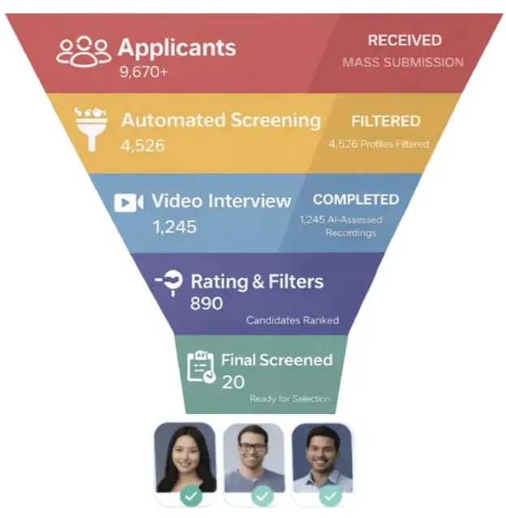

Kapiree automates pre-screening to hire faster and smarter.
AI-powered video interview and pre-screening software that helps hiring teams screen 10x more candidates, reduce time-to-hire by 50%, and surface top talent automatically.
See Kapiree in Action
Watch a quick demo to see how automated pre-screening and video interviews fit into your existing hiring workflow.
A walkthrough of the full Kapiree experience, from application to AI-supported video review.
The Problem with Traditional Pre-Screening
Manual candidate screening is a bottleneck for high-growth teams.
Time-consuming
Recruiters spend 100+ hours per month scheduling and conducting initial phone screens, time that should be spent evaluating, not coordinating.
Too many follow-ups
Chasing candidates for initial calls creates a slow feedback loop and increases drop-off rates.
Weak pre-screening
Resumes don't reveal soft skills, personality, or communication abilities early enough in the process.
Built for Modern Hiring Teams
Helping hiring teams grow with flexible AI-powered hiring solutions.
HR Teams
Reduce time-to-hire and standardize candidate screening across all departments.
Recruiters
Focus on closing top candidates instead of repetitive phone screening calls.
Agencies
Present clients with video profiles, interview insights, and candidate evaluations.
How Kapiree's AI Pre-Screening Process Works
From application to shortlist in a few simple steps

Filter Better Candidates from Larger Applicant Pools
Stop compromising on hire quality just because you have too many applications. Kapiree lets your team review 10x more candidates without adding workload.
Recruiters using Kapiree report saving an average of 15 hours per week on screening calls.
Speed & Efficiency
- Instant automated interview invites
- No scheduling back-and-forth
- Review 10 videos in the time of 1 call
Quality of Profiles
- Standardized questions for fairness
- Collaborative scoring with hiring managers
- Data-driven decisions, less bias
AI Uncovers Insights Hidden in Every Video Interview
AI-powered interview analysis provides transcripts, candidate insights, and skill validation.
Smart Transcripts
Every video interview is instantly transcribed into searchable text, allowing recruiters to quickly find key phrases without rewatching the interview.
Behavioral Insights
AI evaluates communication clarity, confidence level, and enthusiasm to flag strong soft-skill candidates.
Skill Validation
Technical skills mentioned during the interview are automatically detected and validated against the role's requirements.
Define your ideal candidate. Let Kapiree Filter the Rest.
Stop manually reviewing unqualified resumes. Set precise rules for skills, experience, and location in Kapiree's dashboard. Our system automatically shortlists candidates that match your "Must-Haves" and ranks them by your "Nice-to-Haves".
Smart Filtering
Automatically disqualify applications that don't meet your mandatory criteria like visa status or core skills.
Flexible Configuration
Easily adjust rules for different roles. Toggle between strict filtering and broad matching in seconds.
Loved by Hiring Teams Everywhere
See how companies like yours are transforming their recruitment process
“Kapiree revolutionized our hiring process, making it faster and more efficient than ever before. It's truly a leading Video Interview Platform.”
“Using Kapiree's automated video interviews, we found the perfect candidates in record time. Highly impressed with this software.”
“Kapiree's platform transformed our recruitment strategy, allowing us to screen candidates effectively with minimal effort. A game-changer!”
“We've drastically reduced the time spent on interviews while improving the quality of our hires. The automated process is incredibly efficient.”
“Kapiree streamlined our hiring process, enabling us to focus on the best talent. The platform's ease of use and effectiveness are unmatched.”
“The video interview tools are exceptional. They saved us countless hours and helped us identify top candidates quickly and accurately.”
Ready to Automate Your Pre-Screening?
Already using the HRMS? Add Hiring whenever you need it.
Frequently Asked Questions
Everything you need to know about our application.
{{ f.a }}
- {{ li }}
{{ f.outro }}